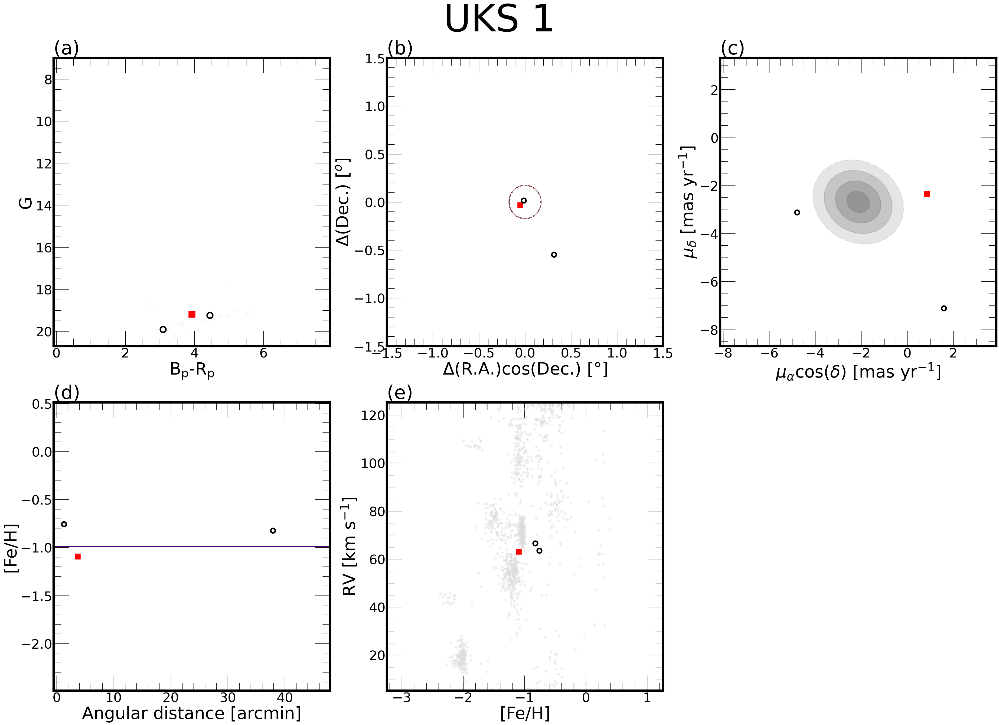
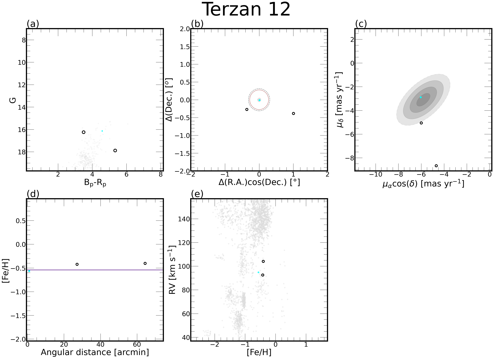

SDSS-IV/APOGEE-2 DR17 Outliers
Principal Researchers
Affiliations center>


Acknowledgements
We gratefully acknowledges the grants support provided by ANID Fondecyt Iniciación No. 11220340, ANID Fondecyt Postdoc No. 3230001 and CAS-ANID/CAS220009 (Sponsoring researcher in both), from the Joint Committee ESO-Government of Chile under the agreement 2023 ORP 062/2023.
Contact
Please let me know if you have any questions or suggestions: jose.fernandez@ucn.cl
______________________________________________________________________________________________Page maintained by J. G. Fernández-Trincado
Last Update: 2025 November 18